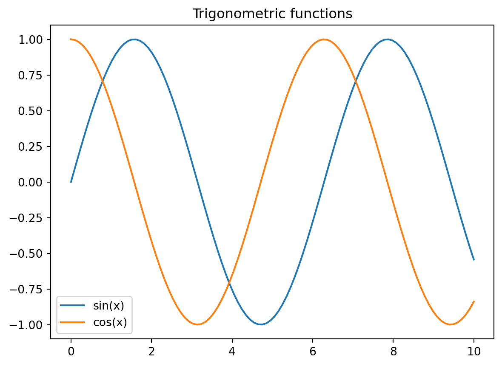
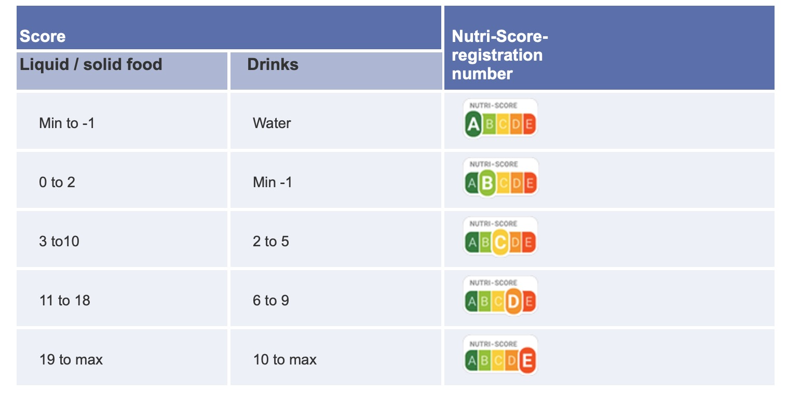
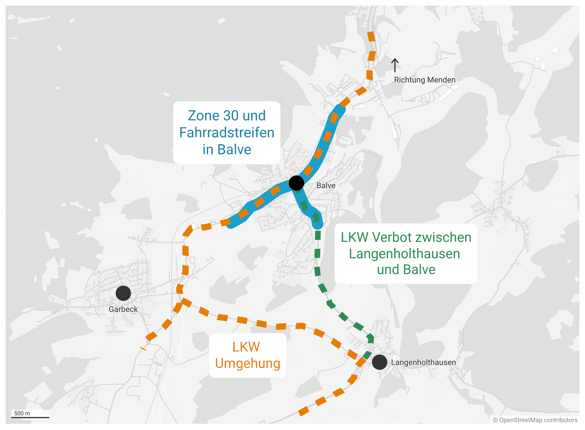

import pandas as pd import polars as pl import os import altair as alt import polars.selectors as cs from camminapy.plot import altair_theme

panda
style
data = FileAttachment("seattle-weather.csv") .csv({typed: true}) Plot.plot({ width: 800, height: 500, padding: 0, color: { scheme: "blues", type: "sqrt"}, y: { tick…


altair
polars